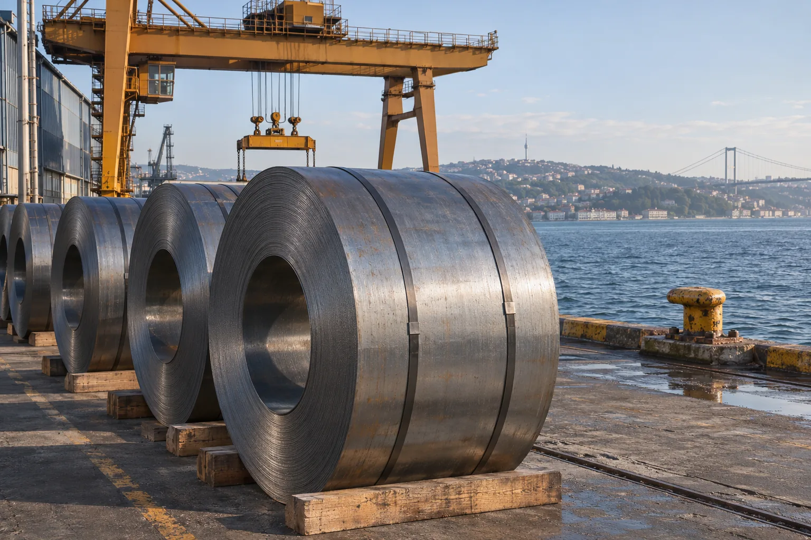

On 19 November 2026 an EU rule entered into force that changes the conversation between a European steel buyer and its Turkish supplier. A buyer asking for a carbon discount now has a concrete question to put to the mill. Which carbon price was actually paid on the emissions embedded in these goods, and what evidence connects that payment to this product? A commercial surcharge appearing on a steel invoice answers neither part on its own.
Consider a purchasing manager in Rotterdam who buys hot-rolled coils from a trader in Istanbul. The trader purchases from two mills and quotes a single delivered price. Before building a deduction into next year's purchasing budget, the manager needs to separate the two installations, identify the relevant production period and understand which company can supply independently certified information. One mill's paperwork cannot establish what happened at the other. This guide sets out a practical way to organise that conversation before anyone promises a saving.
What changed on 19 November
The European Commission adopted Implementing Regulation (EU) 2026/2498 on 5 November. Publication in the Official Journal followed on 16 November. Under Article 36 it enters into force three days after publication and applies from 1 January 2026. These dates matter to businesses reconciling purchases already made this year. An invoice issued before November can still concern imports within the reporting period. The first annual CBAM declaration for 2026 imports is due by 30 September 2027.
The regulation explains how the carbon price effectively paid outside the EU translates into fewer CBAM certificates to surrender. It also develops the evidence and independent certification arrangements behind the calculation. The EU authorised declarant claims the reduction. A Turkish producer supplies installation information and may have evidence its customer cannot obtain independently. A sales agent, customs broker and accredited verifier have different responsibilities. Identify the actual participants before circulating a questionnaire.
Establish the scope of the purchase
Start with a single customs entry. Record the commodity code, origin, importer, declared net mass, date of importation and producer. Confirm that the goods and the importer fall within the applicable CBAM rules. A product description such as industrial component or galvanised assembly can conceal differences in tariff treatment. Ask the customs specialist to resolve classification uncertainty before the finance department models a credit. Document who reached the conclusion and which specification, drawing or material certificate supported it. For Nordic routes, see how to combine CBAM imports into the EU, Norway and Iceland.
Follow the purchase order backwards. A seller based in Türkiye may distribute imported material or arrange processing at an unrelated plant. The registered office, dispatch warehouse and production installation can have different addresses. Record the legal name and physical location of each producer and distinguish a change of ownership from a manufacturing step. Heat numbers, coil identifiers, delivery notes and stock movements can help reconcile the physical consignment with the accounting record. They do not independently certify a carbon payment.
Distinguish the two evidence routes
Under the actual-price route, the operator establishes the effective carbon price attributable to the relevant goods in accordance with the regulation. Independent certification supports the declarant's use of those figures. A bank debit may show settlement. An allocation worksheet may show a calculation. Neither item by itself establishes the covered emissions, production quantities, adjustments and product attribution. Ask the mill what its certification will cover and who will receive the resulting report.
The default-price route uses an applicable value made available by the Commission. The Commission has said it will publish values and the relevant methodology in the CBAM Registry for use in the first declarations. Check availability for the country, mechanism and goods concerned at the time of filing. Leave an unavailable value unfilled in a forecast and explain the uncertainty. A consultant's estimate, a carbon exchange quotation or an EU allowance price cannot be entered as an official default simply because it is accessible.
Build a file that a stranger can follow
Give each installation a file with a named owner and a reporting year. Begin with the underlying legal instrument, the identity of the liable entity and the administrative reference for its account. Assemble assessments, settlement statements, allowance records where relevant and evidence of payment. Preserve the currency, settlement date and covered period. Explain any difference between the amount assessed and the amount actually borne. Free allocations, refunds, rebates or other compensation can affect the effective figure. A letter promising future payment belongs in an outstanding-items register.
Next connect that material to production. Retain the output record, measurement boundaries, product classification, allocation method and any dependency on upstream precursors. Identify which documents an independent reviewer can inspect directly. If confidentiality limits disclosure to a buyer, arrange controlled access for the certifier and agree what certified results the declarant may retain. A summary sent by a salesperson is particularly difficult to investigate eighteen months later if the author has changed jobs or the underlying workbook has been overwritten.
Keep the calculation reproducible. Store the original workbook, its dated export and an explanation of significant assumptions. Preserve source units before converting them. Article 6 uses the yearly average exchange rate published by the Commission for the relevant year. An invoice conversion at the spot rate used by the treasury team may serve internal bookkeeping but produce a different result. Label management estimates clearly and reserve the filing column for figures supported by the applicable method.
Try the method on a mixed shipment
Suppose the Rotterdam buyer receives twelve coils under one commercial invoice. Eight came from a facility near İzmit and four from another installation. The warehouse records the total weight received. The mill certificates identify individual coils. The transport documents group them by trailer. Create a reconciliation showing how each coil rolls up to an installation subtotal and then to the declared shipment. Share unresolved weight differences with logistics before an auditor has to reconstruct them from scanned attachments.
The first facility supplies a payment receipt and mentions a compensation application. The second provides an environmental performance brochure and a voluntary offset certificate. Give these records different treatment. Request the outcome of the compensation application and determine its effect with the certifier. Ask the second producer whether any qualifying mandatory carbon price applied and what proof exists. Buying voluntary credits, offering green steel or installing efficient equipment does not establish the particular payment claimed. The buyer can discuss environmental performance separately in its procurement decision.
Now test what happens if the first facility revises a production total after an inventory adjustment. Which deliveries use the earlier figure? Which employee can identify affected customers? A stable installation identifier and a version log make the correction manageable. Keep a reconciliation between the file issued originally, the corrected file and the reason for the change. A contractual notice mechanism helps the importer receive the update before signing its declaration.
Bring purchasing terms into line with the evidence
A useful supply clause identifies the installation data to be delivered, delivery milestones, language, permitted recipients and correction procedure. Specify whether a trading intermediary must obtain cooperation from the producing mill. Set a named contact for technical questions and a substitute during holidays. Agree how to handle a mill substitution, a corporate reorganisation or a change in the production route. An obligation to provide reasonable assistance becomes more usable when the parties agree what a complete first submission looks like.
Distinguish a contractual price adjustment from a regulatory entitlement. The buyer may negotiate a provisional holdback pending certification, subject to the governing contract and applicable law. That commercial arrangement cannot bind a public authority. A purchasing team modelling landed cost should keep the gross contractual price, expected certificate expense and possible deduction in separate cells. Record who bears the cost of an unsuccessful claim and which party controls a challenge. Review any indemnity alongside liability limits, exclusions and insurance coverage.
Give the independent reviewer a usable brief
The Commission describes a transitional arrangement under which accredited CBAM verifiers may certify carbon-price evidence for the first two years without the additional accreditation subsequently required. Confirm the professional's competence and eligibility for the proposed assignment. Obtain an engagement letter identifying the operator, installations, goods, reporting period and intended deliverable. A consultant who assembled the figures should not casually be described as the independent person certifying them.
A short pre-engagement call can expose missing links. Ask the reviewer to trace one sum from the statutory assessment to settlement, then from installation output to product attribution. Invite questions about evidence held by group treasury, documents available in Turkish only or conflicting exchange-rate conventions. Discuss how a qualified finding or unresolved discrepancy would be communicated. A schedule that allows time for corrections before the buyer's internal sign-off is usually more useful than a general promise to cooperate at year end.
Check the units before the numbers leave the mill
A frequent spreadsheet error is surprisingly easy to spot on paper. Print the headings for a single product and read them aloud. Does a column show euros per tonne of finished steel, euros per tonne of carbon dioxide equivalent, or a quantity of certificates? Those denominators describe different things. Article 7 sets out separate calculations for the actual and default approaches. Ask the preparer to annotate each input with its origin and unit. Give a second analyst an empty copy and compare their independently reproduced result with the original.
Consider a shipment split between a December departure and a January import. Record the dates of manufacture, dispatch, customs clearance and payment in separate fields. Agree a convention for documenting returns, rejected batches and replacements. A consolidated annual statement can otherwise include material that never reached the buyer, and a replacement coil can appear twice. An exception log with a short explanation, a reference to the amended customs entry and the initials of the employee who approved the correction lets the next reviewer reconstruct the adjustment.
Decide what the board can rely on
Prepare a one-page decision note with three clearly labelled scenarios. One uses certified actual figures, one uses an official default where available, and one assumes no deduction for budgeting purposes. Show the assumptions driving each scenario and identify what information would change the result. Do not turn a favourable negotiating position into a booked saving without examining the applicable accounting treatment. If an acquisition is under review, ask whether the seller's forecast depends on payments by an entity outside the target group.
Before approving a purchase, ask a colleague unfamiliar with the transaction to locate five things: the customs entry, producing installation, basis for the asserted payment, evidence of adjustments and status of independent certification. An unanswered question becomes a named action with an owner and a due date. The immediate return on this exercise is practical. Procurement knows what to request, finance knows what remains uncertain, and the European declarant can see exactly which figures are ready to use.
Frequently asked questions
Does a carbon surcharge on a steel invoice establish a CBAM deduction?
The buyer still needs the basis for the qualifying carbon price and the evidence required for the chosen route. A commercial surcharge alone cannot establish that entitlement.
Can one report automatically cover steel bought through a trader from two mills?
Identify both installations and establish which products, quantities and reporting periods each report covers before relying on it.